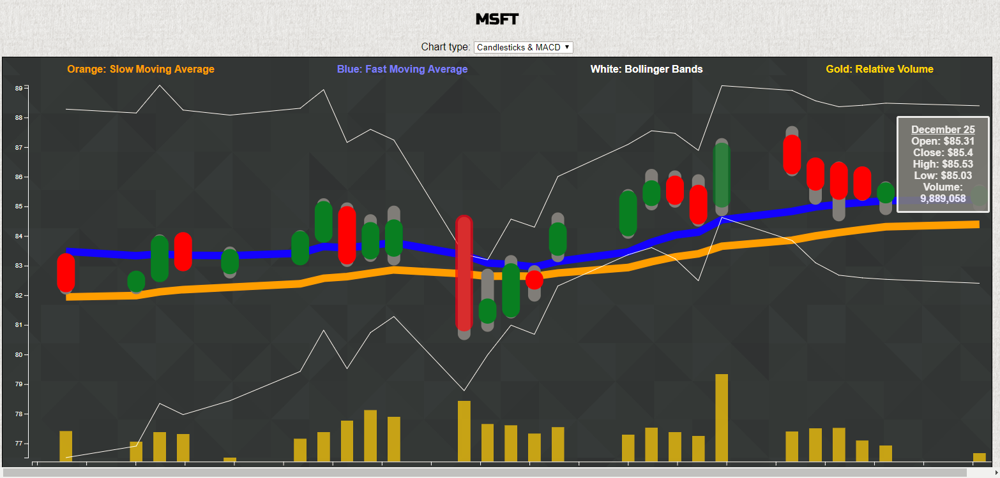
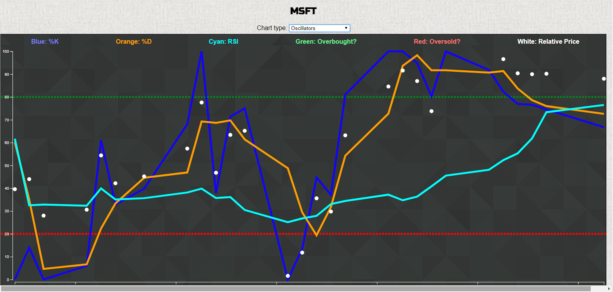

Chartman is a platform for tracking the value of American-listed stocks, and currencies (both national fiat currencies and cryptocurrencies). Beyond the traditional "candlestick chart" with volume, Chartman also tracks momentum (MACD and RSI), volatility ( Bollinger bands), and selling pressure (stochastic oscillators).
 Logged-in users can save any number of equities or currency pairs to their profile, and view their charts when convenient. Raw daily data is pulled, as needed, from Alpha Vantage's free API.